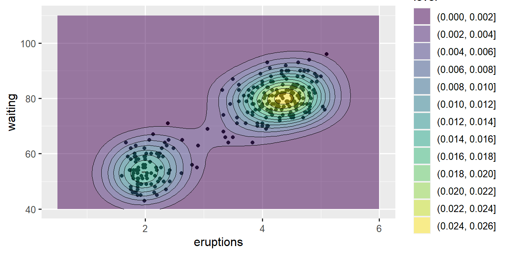
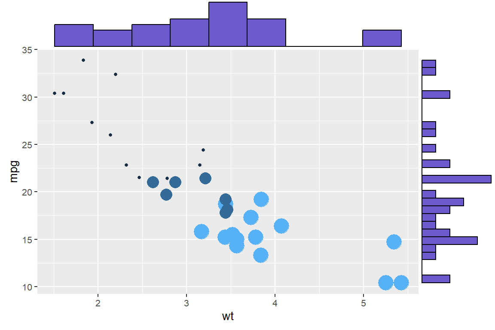

1 [Showcase] Introduction
The text below is for demonstrative purposes only.
See https://github.com/danielvartan/abnt to learn more about this template.
See Figure 1.1.
“The activity can be represented by a general schema of problem-solving by the method of imaginative conjectures and criticism, or, as I have often called it, by the method of conjecture and refutation. The schema (in its simplest form) is this
\[ \text{P}_{1} \to \text{TT} \to \text{EE} \to \text{P}_{2} \]
Here \(\text{P}_{1}\) is the problem from which we start, \(\text{TT}\) (the ‘tentative theory’) is the imaginative conjectural solution which we first reach, for example our first tentative interpretation. \(\text{EE}\) (‘error- elimination’) consists of a severe critical examination of our conjecture, our tentative interpretation: it consists, for example, of the critical use of documentary evidence and, if we have at this early stage more than one conjecture at our disposal, it will also consist of a critical discussion and comparative evaluation of the competing conjectures. \(\text{P}_{2}\) is the problem situation as it emerges from our first critical attempt to solve our problems.
It leads up to our second attempt (and so on). A satisfactory understanding will be reached if the interpretation, the conjectural theory, finds support in the fact that it can throw new light on new problems — on more problems than we expected; or if it finds support in the fact that it explains many sub-problems, some of which were not seen to start with. Thus we may say that we can gauge the progress we have made by comparing \(\text{P}_{1}\) with some of our later problems (\(\text{P}_{n}\), say).”
Source: Steve Pyke.
One of the 20th century’s most influential philosophers of science.
1.1 Secondary section
See Table 1.1.
Code
datasets::iris |>
dplyr::as_tibble() |>
dplyr::slice_sample(n = 5) |>
gt::gt()| Sepal.Length | Sepal.Width | Petal.Length | Petal.Width | Species |
|---|---|---|---|---|
| 6.5 | 3.0 | 5.5 | 1.8 | virginica |
| 6.5 | 3.0 | 5.8 | 2.2 | virginica |
| 5.0 | 3.0 | 1.6 | 0.2 | setosa |
| 5.0 | 3.5 | 1.6 | 0.6 | setosa |
| 6.2 | 2.9 | 4.3 | 1.3 | versicolor |
Source: Based on FISHER (1936).
1.1.1 Tertiary section
Code
ggplot2::ggplot(
data = datasets::faithful,
mapping = ggplot2::aes(x = eruptions, y = waiting)
) +
ggplot2::geom_point() +
ggplot2::xlim(0.5, 6) +
ggplot2::ylim(40, 110) +
ggplot2::geom_density_2d_filled(alpha = 0.5) +
ggplot2::geom_density_2d(linewidth = 0.25, colour = "black") +
ggplot2::theme(legend.position = "none")
Source: Retrieved from the ggplot2 R package documentation (WICKHAM, 2016).
1.1.1.1 Quaternary section
- Bullet point
- Bullet point
- Bullet point
- Bullet point
1.1.1.1.1 Quinary section
- List
- List
- List
1.2 Another secondary section
See Figure 1.3.
Code
p <- ggplot2::ggplot(
data = datasets::mtcars,
mapping = ggplot2::aes(x=wt, y=mpg, color=cyl, size=cyl)
) +
ggplot2::geom_point() +
ggplot2::theme(legend.position="none")
ggExtra::ggMarginal(
p = p,
type = "histogram",
fill = "slateblue",
xparams = list(bins=10)
)
Source: Data extracted from the 1974 Motor Trend magazine and published by HENDERSON; VELLEMAN (1981). Visualization by HOLTZ ([s.d.]), available at The R Graph Gallery.